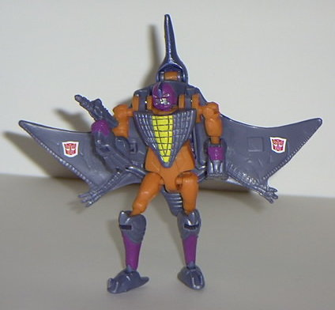
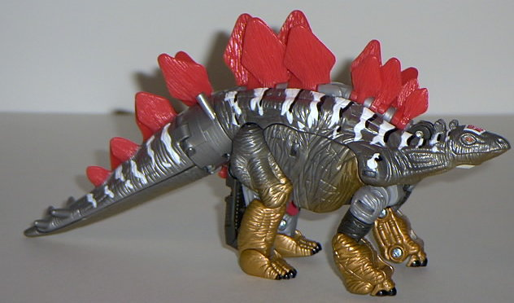

Transformers:
Dinobots (Wal-Mart Exclusives)
Transformers:
Dinobots (Wal-Mart Exclusives)


In late spring of 2003, Hasbro,
with stores clamoring for exclusive Transformers merchandise, decided to
give Wal-Mart their own miniature exclusive sub-line of Transformers. Thus,
the Transformers: Dinobots were born. This mini subline consisted of 3
carded sets, each set containing a basic-sized and a deluxe-sized repaint
of an older Beast Wars toy. These molds came from either
Beast
Wars
proper, the
Beast Machines Dinobots
(which in turn were from Japanese Transformers, for the most parts), and
a few- Slapper and Sludge- were molds that had never been released up in
America until this point, and beforehand, they were only available from
Japan or an online retailer. What is extraordinary about the Dinobots,
though, was that you got a deluxe-sized and a basic-sized figure, which
would normally go for about $17 U.S., for only $10, nearly half the price!
All of them except Sludge also shared a color scheme that was reminiscent
of the original Generation 1 Dinobots. The Transformers: Dinobots were
a one-shot thing, however, and these three two-packs were the only ones
released.
 Grimlock
Grimlock
Slapper
Sludge
Snarl
Swoop/Terranotron
Triceradon
Back to Model
Commentary Index